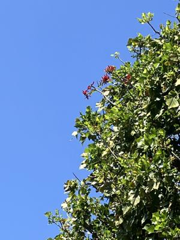
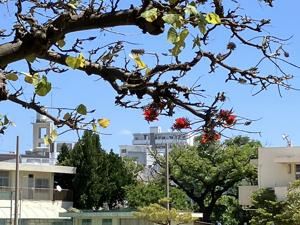
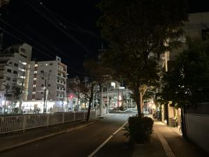
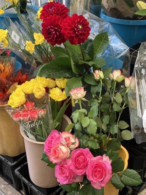

うるがいの話 ある日
最新: 退職代行【うるがいの話 ある日】とは 一日だけのプログです
『うるがいの話』の最新一日だけのプログで、通信料が少なく経済的だ。カニの画像をクリックすると全ての日付が載る『うるがいの話』サイトを表示します
|
|
【うるがいの話】 うるがい(ｳﾙｶﾞｲ urugai)とは、『もずくがに』の名前でとても大きくなります。 |
|---|---|
|
|
【カミマヤーの話】 猫のことを方言でマヤーといいます。カミマヤー（kamimayaa）とは、神の猫のことです。 |
|
【たながぁの音楽】 たながぁ（ﾀﾅｶﾞｰ tanagaa）とは手長えびのことで、何種類かあり大きいのは車 エビぐらいになります。 |

|
【ぶながぁの話】 ぶながぁ(ﾌﾞﾅｶﾞｰ bunagaa)とは、赤い髪の毛、赤い身体、そして身長は１ｍ２０ｃｍ ぐらい、川の蟹を食べているの目撃された。場所は沖縄県国頭郡大宜味村のと ある村僕の隣近所に住んでいる爺さんから、聞いた話です。 |
|
|
【ギーマの話】 ギーマ(giima)とは、山原の里山に咲くスズランに似た、 花を付けます。実は食べられます、 気が付くと口の周りが紫になっています。 |
2024年03月22日 (金）退職代行
15:19
  
壮行会のコバさん、前職を辞めるときに『退職代行』を使ったと言う。ユー
チューブ動画で、退職代行を知ったあと直ぐに利用したという。前の職場か
ら電話があっても『退職代行』に任せてますと答えたと言っていた、ホー。
飲み会は盛り上がっていたが、老人は２０時３０分に引き上げる。ビーチジ
ョッキー１杯とハーボール２杯、周りの人達は私の３倍以上のペースでどん
どん飲んでいた。ＳＬＡＣＫに私が美味しくないとあったので、チェックが
入った、まー普通かな。料理人のチェックもはいった、店長さんだけで料理
を出していたが、２０時前から出勤したもよう。だから、料理人の腕前は知
らない。
Ｆさん
おはようございます。
昨日はありがとうございました。
本日は在宅で自宅PCにて作業させて頂きます。
よろしくお願いいたします。
Ｔさん
おはようございます。
昨日はありがとうございました:おじぎ:
自分も本日在宅にて作業します。10時からのミーティングも
在宅のpcにて参加します。
フムフム、そもそも研修会館に出勤しなくてもいいのでは。

飲み会があるので、昼、歩いて出勤。前職場の近くを通るのでサングラスと
マスクをした。交差点に信号待ちしている元の職場のオナガさんを、みてし
まった。シカトするのも何なので、サングラスを外して挨拶をする。テツさ
ん、トウヤさんが３月で退職しますと言った。オオー、どんどん退職してい
く。
１５時１２分 ビットコインの総資産 ￥２９、１９４（↓２３４）